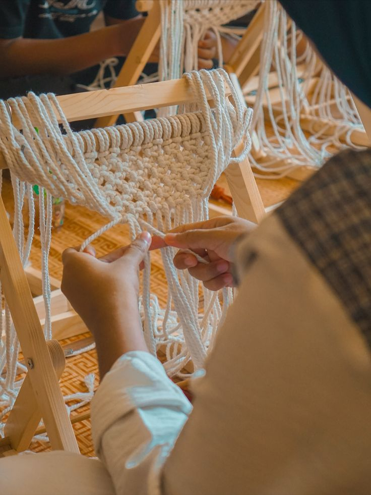
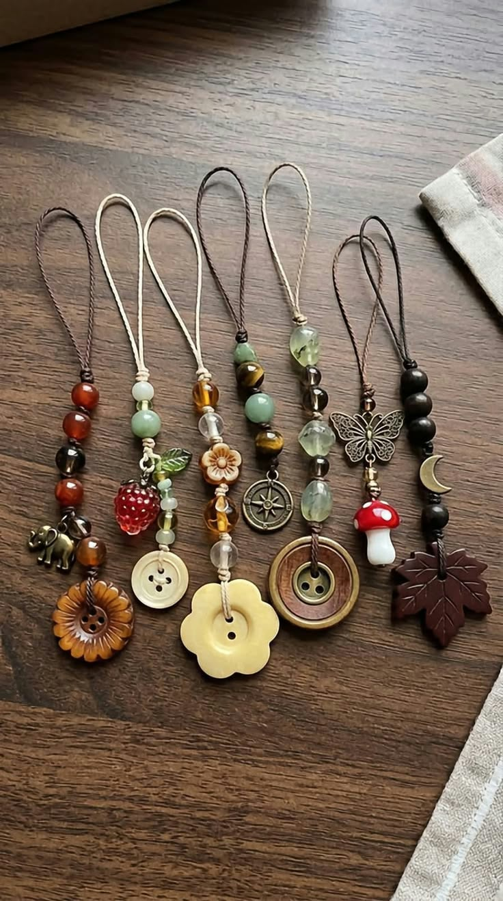

Tentang Kami
Nisloom adalah sebuah lini bisnis kreatif yang bergerak di bidang kerajinan tangan (handicraft) premium. Kami mengkhususkan diri dalam pembuatan produk-produk estetis dan fungsional yang dibuat secara manual (handmade) dengan ketelitian tinggi. Produk kami meliputi dekorasi rumah macrame, tas rajut modern, perlengkapan rumah tangga berbahan serat alam, dan aksesori fashion unik. Setiap produk Nisloom diciptakan bukan hanya sebagai barang pakai, melainkan sebagai sebuah karya seni. Kami memadukan teknik kerajinan tradisional dengan sentuhan desain modern yang minimalis dan elegan, menjadikannya sangat cocok untuk gaya hidup masyarakat urban saat ini. Dengan berfokus pada detail, pemilihan material berkualitas, dan keberlanjutan lingkungan, Nisloom hadir untuk membawa kehangatan dan keindahan alami ke dalam setiap sudut ruang dan keseharian Anda.

Mengapa Memilih Kami?
- Tanpa bahan pengawet dan pemutih
- Bersertifikat organik
- Dikerjakan oleh petani nira lokal
Cara Pemesanan
- Pilih produk dan jumlah
- Hubungi kami melalui WhatsApp
- Lakukan pembayaran, pesanan dikirim
Produk dan Harga
| Produk | Ukuran | Harga |
|---|---|---|
| Gula Semut Original | 250 g | Rp18.000 |
| Gula Semut Original | 500 g | Rp34.000 |
| Gula Semut Jahe | 250 g | Rp22.000 |

Hubungi Kami
Jl. Raya Baturraden No. 10
Banyumas, Jawa Tengah